# install.packages("mapboxapi")
# install.packages("ggspatial")
library(readr) # R package for reading and writing data
#> Warning: package 'readr' was built under R version 4.1.3
library(sf) # R package for handling simple feature objects
#> Warning: package 'sf' was built under R version 4.1.3
#> Linking to GEOS 3.10.2, GDAL 3.4.1, PROJ 7.2.1; sf_use_s2() is TRUE
library(ggplot2) # R package for creating plots and maps
#> Warning: package 'ggplot2' was built under R version 4.1.3
library(dplyr) # R package for data manipulation
#> Warning: package 'dplyr' was built under R version 4.1.3
#>
#> Attaching package: 'dplyr'
#> The following objects are masked from 'package:stats':
#>
#> filter, lag
#> The following objects are masked from 'package:base':
#>
#> intersect, setdiff, setequal, union
library(mapboxapi) # R package for interfacing with Mapbox API. *Requires access token in order to use
#> Warning: package 'mapboxapi' was built under R version 4.1.3
#> Usage of the Mapbox APIs is governed by the Mapbox Terms of Service.
#> Please visit https://www.mapbox.com/legal/tos/ for more information.
maryland_data <- readr::read_rds(here::here("data/maryland_data.rds"))
coastal_researchgrade <- readr::read_rds(here::here("data/coastal_researchgrade.rds"))
piedmont_researchgrade <- readr::read_rds(here::here("data/piedmont_researchgrade.rds"))
biodiv_researchgrade <- readr::read_rds(here::here("data/biodiv_researchgrade.rds"))
GBIF_sm <- readr::read_rds(here::here("data/GBIF_sm.rds"))
GBIF_kingdoms <- readr::read_rds(here::here("data/GBIF_kingdoms.rds"))Data Exploration
Introduction to the exploration:
Data from iNaturalist projects were retrieved using r package “rinat” directly from the iNaturalist.
iNaturalist data was also retrieved via the Global Biodiversity Information Facility.
iNaturalist has multiple projects that vary by geography:
# Coastal
coastal_research_map <- ggplot() +
# Use layer_static_mapbox() to set up base map
mapboxapi::layer_static_mapbox(
# Make sure to set location to the proper data
location = coastal_researchgrade,
style_url = "mapbox://styles/mapbox/light-v10"
) +
# Set object aesthetics
ggplot2::geom_sf(
mapping = aes(),
color = "red",
size = 2,
alpha = 0.3,
shape = 4,
data = coastal_researchgrade
) +
# Add appropriate title and caption
labs(
title = "Maryland Coastal Research Grade Observations",
caption = "Data courtesy of iNaturalist: Master Naturalist Program - Coastal Plain \n project_id = 474"
)
# View map and adjust aesthetics
coastal_research_map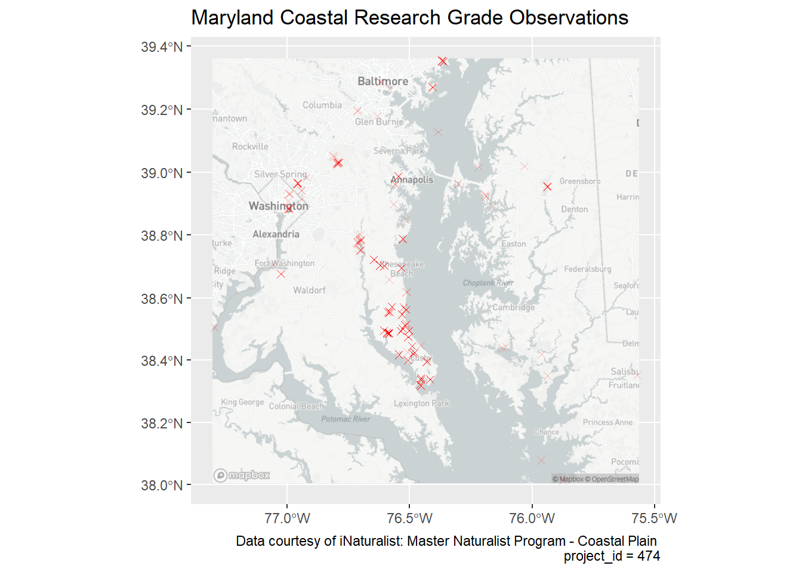
# Save map as .png file for referencing
ggplot2::ggsave("coastal_research_map.png", plot = coastal_research_map, path = "deliverables")
#> Saving 7 x 5 in image
# Piedmont
piedmont_research_map <- ggplot() +
mapboxapi::layer_static_mapbox(
location = piedmont_researchgrade,
style_url = "mapbox://styles/mapbox/light-v10"
) +
ggplot2::geom_sf(
mapping = aes(),
color = "blue",
size = 2,
alpha = 0.3,
shape = 4,
data = piedmont_researchgrade
) +
labs(
title = "Maryland Piedmont Research Grade Observations",
caption = "Data courtesy of iNaturalist: Master Naturalist Program - Piedmont Region \n project_id = 1396"
)
piedmont_research_map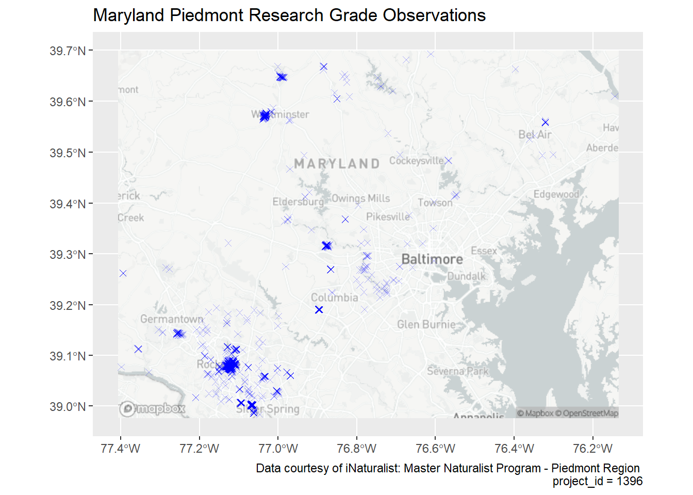
ggplot2::ggsave("piedmont_research_map.png", plot = piedmont_research_map, path = "deliverables")
#> Saving 7 x 5 in image
# State biodiversity data
biodiv_researchgrade_map <- ggplot() +
mapboxapi::layer_static_mapbox(
location = biodiv_researchgrade,
style_url = "mapbox://styles/mapbox/light-v10"
) +
ggplot2::geom_sf(
mapping = aes(),
size = 2,
alpha = 0.3,
shape = 4,
data = biodiv_researchgrade
) +
labs(
title = "Maryland Biodiversity Research Grade Observations",
caption = "Data courtesy of iNaturalist: Maryland Biodiversity Project \n project_id = 17241"
) +
ggplot2::theme_classic()
biodiv_researchgrade_map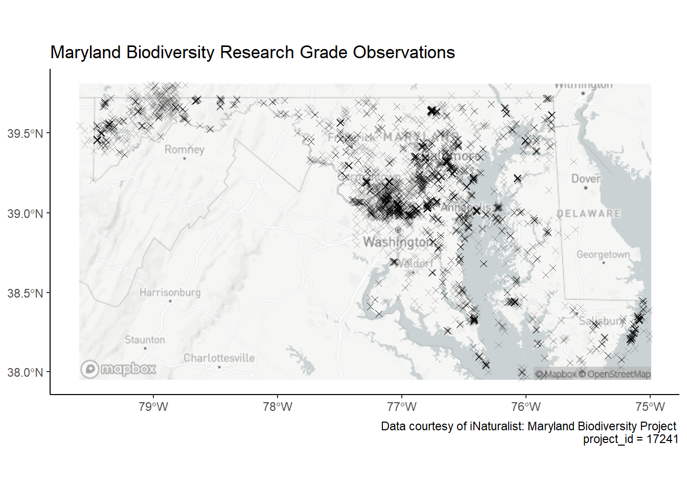
ggplot2::ggsave("biodiv_research_map.png", plot = biodiv_researchgrade_map, path = "deliverables")
#> Saving 7 x 5 in imageCan multiple projects be presented in a single map?
Combine multiple iNaturalist project data by creating a project variable which can be used as a color indicator when mapping.
The $project value will refer to the project’s ID, in this case I’m using “Coastal” and “Piedmont”.
Create a new data.frame where both coastal and piedmont projects are included by using bind_rows().
Now the data is ready to be plotted.
# Add a project indicator variable
coastal_researchgrade$project <- "Coastal"
piedmont_researchgrade$project <- "Piedmont"
# Combine project data into a single sf object
region_researchgrade <-
dplyr::bind_rows(
coastal_researchgrade,
piedmont_researchgrade
)
masternat_map <- ggplot() +
mapboxapi::layer_static_mapbox(
location = region_researchgrade,
style_url = "mapbox://styles/mapbox/light-v10"
) +
ggplot2::geom_sf(
mapping = aes(color = project),
size = 1,
alpha = 0.5,
shape = 4,
data = region_researchgrade
) +
# ggplot2::geom_sf_label() +
labs(
title = "Maryland Master Naturalist Research Grade Observations",
caption = "Data combined from piedmont and coastal regional projects"
) +
ggplot2::theme_classic()
masternat_map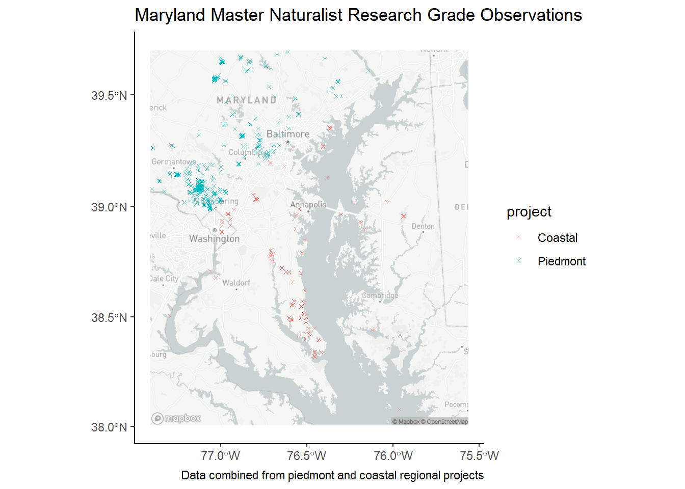
ggplot2::ggsave("masternat_map.png", plot = masternat_map, path = "deliverables")
#> Saving 7 x 5 in imageWe can look at location and number of observations reported by each user
# Use region_researchgrade data to plot the number of observations by users.
# Use color aesthic to distinguish between observations for each project.
masternat_user_plot <-
ggplot(region_researchgrade, aes(user.login, fill = project)) +
ggplot2::geom_bar() +
scale_fill_brewer(
type = "qual",
palette = "Dark2",
) +
# Flip axes so usernames are more legible
coord_flip() +
guides(fill = "none") +
labs(title = "Observations per User by Project") +
# Add legend
guides(fill = guide_legend(title = "Project")) +
ggplot2::theme_classic()
masternat_user_plot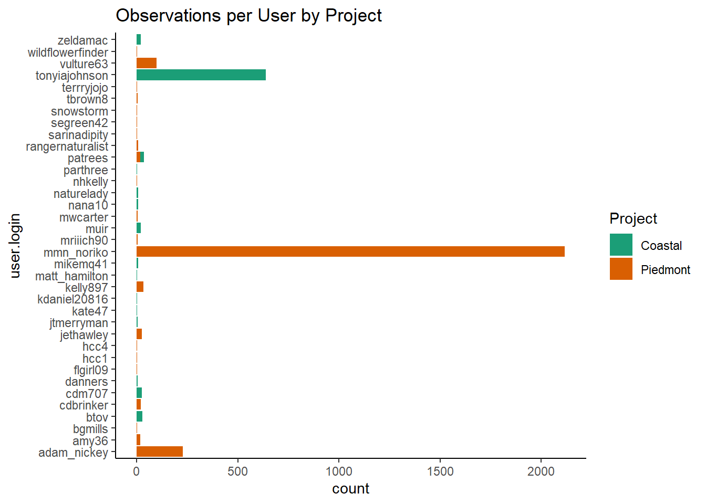
ggplot2::ggsave("masternat_user_plot.png", plot = masternat_user_plot, path = "deliverables")
#> Saving 7 x 5 in image
piedmont_user_map <- ggplot() +
mapboxapi::layer_static_mapbox(
location = piedmont_researchgrade,
style_url = "mapbox://styles/mapbox/light-v10"
) +
ggplot2::geom_sf(
mapping = aes(color = user.login),
size = 2,
alpha = 0.5,
data = piedmont_researchgrade
) +
# Add labels
labs(
title = "Maryland Master Naturalist Observations by User\nPiedmont Region",
caption = "Data courtesy of iNaturalist: Master Naturalist Program - Piedmont Region\nproject_id = 1396"
) +
ggplot2::theme_classic()
piedmont_user_map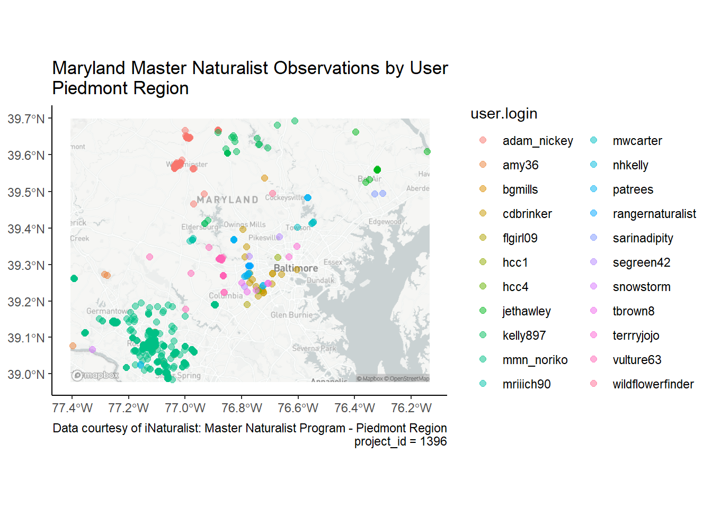
# FIXME: adjust caption to fit in whitespace
ggplot2::ggsave("piedmont_user_map.png", plot = piedmont_user_map, path = "deliverables")
#> Saving 7 x 5 in image
# Filter out observations from the user with the most observations according to masternat_user_plot
mmn_noriko_obs <-
filter(piedmont_researchgrade, user.login == "mmn_noriko")
# Map top user's observations
topuser_piedmont <- ggplot() +
mapboxapi::layer_static_mapbox(
location = mmn_noriko_obs,
style_url = "mapbox://styles/mapbox/light-v10"
) +
# Set color aesthetic to the number of photos taken per observation
ggplot2::geom_sf(
mapping = aes(color = observation_photos_count),
size = 2,
alpha = 0.25,
data = mmn_noriko_obs
) +
labs(
title = "Top User's Observations in MD Piedmont Region",
caption = 'User "mmn_noriko" reported 2110 research grade observations\n for the Maryland Master Naturalist Piedmont Region iNaturalist Project'
) +
ggplot2::theme_classic()
topuser_piedmont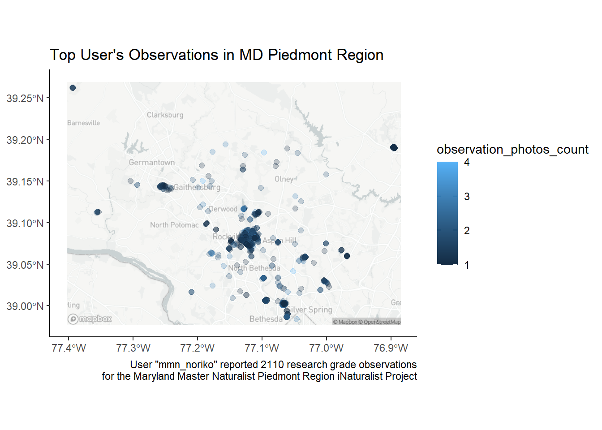
# FIXME: Center title label, change colors of points, increase transparency
ggplot2::ggsave("topuser_piedmont.png", plot = topuser_piedmont, path = "deliverables")
#> Saving 7 x 5 in imagecoastal_user_map <- ggplot() +
mapboxapi::layer_static_mapbox(
location = coastal_researchgrade,
style_url = "mapbox://styles/mapbox/light-v10"
) +
ggplot2::geom_sf(
mapping = aes(color = user.login),
size = 2,
alpha = 0.5,
data = coastal_researchgrade
) +
guides(fill = guide_legend(ncol = 2)) +
# Add labels
labs(
title = "Maryland Master Naturalist Observations by User\nCoastal Region",
caption = "Data courtesy of iNaturalist: Master Naturalist Program - Coastal Plain \n project_id = 474"
) +
ggplot2::theme_classic()
coastal_user_map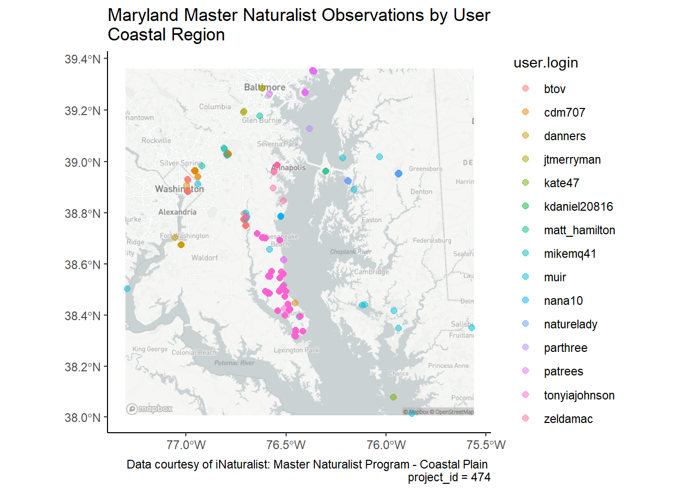
# FIXME: Make legend two columns
ggplot2::ggsave("coastal_usermap.png", plot = coastal_user_map, path = "deliverables")
#> Saving 7 x 5 in image
# Filter out observations from the user with the most observations according to masternat_user_plot
tonyiajohnson_obs <-
dplyr::filter(coastal_researchgrade, user.login == "tonyiajohnson")
# Map top user's observations
topuser_coastal <- ggplot() +
mapboxapi::layer_static_mapbox(
location = tonyiajohnson_obs,
style_url = "mapbox://styles/mapbox/light-v10"
) +
ggplot2::geom_sf(
mapping = aes(color = observation_photos_count),
size = 2,
alpha = 0.5,
data = tonyiajohnson_obs
) +
scale_fill_brewer(
type = "seq",
palette = "OrRd"
) +
labs(
title = "Top User's Observations in MD Coastal Region",
caption = 'User "tonyiajohnson" reported 2110 research grade observations\n for the Maryland Master Naturalist Coastal Region iNaturalist Project'
) +
ggplot2::theme_classic() +
ggplot2::theme(
axis.text.x = element_text(angle = -30, vjust = 1, hjust = 0)
)
topuser_coastal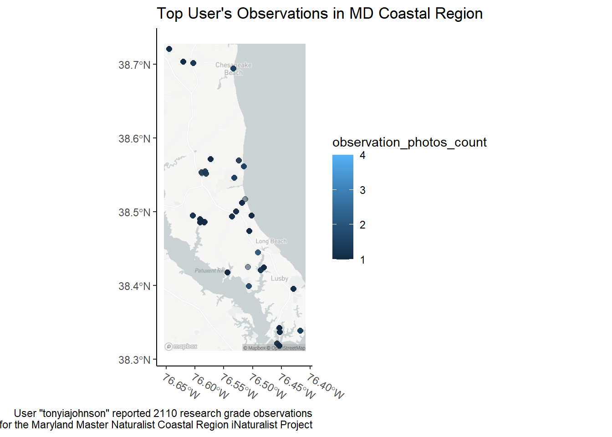
# FIXME: adjust label positions, widen x-limits
ggplot2::ggsave("topuser_coastal.png", plot = topuser_coastal, path = "deliverables")
#> Saving 7 x 5 in imageWe can look at variation by kingdom, genus and species:
GBIF_kingdoms_bar <-
ggplot(GBIF_sm, aes(x = kingdom, fill = kingdom)) +
ggplot2::geom_bar() +
scale_fill_brewer(
type = "qual",
palette = "Dark2"
) +
guides(fill = "none") +
ggplot2::geom_text(
aes(
label = ..count..
),
stat = "count",
vjust = -0.2,
colour = "black"
) +
labs(
title = "Distribution of Observations by Kingdom",
caption = "Data courtesy of iNaturalist Research-Grade Observations via GBIF"
) +
ggplot2::theme_classic()
GBIF_kingdoms_bar
#> Warning: The dot-dot notation (`..count..`) was deprecated in ggplot2 3.4.0.
#> i Please use `after_stat(count)` instead.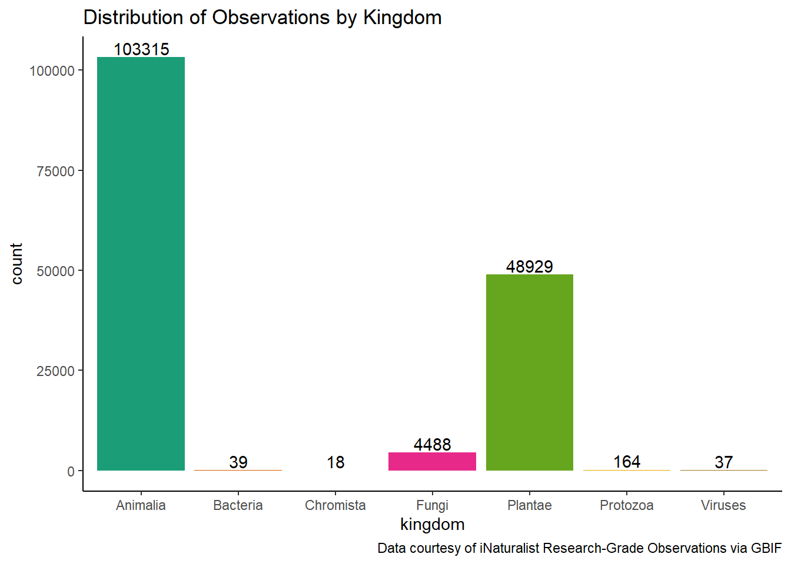
# FIXME: Center title position
ggplot2::ggsave("GBIF_kingdoms_bar.png", plot = GBIF_kingdoms_bar, path = "deliverables")
#> Saving 7 x 5 in image
# Create data
plants_vs_animals <-
filter(
GBIF_sm, kingdom == c("Animalia", "Plantae")
)
# plants_vs_animals_bar <-
# ggplot(plants_vs_animals, aes(x = kingdom, fill = kingdom)
# ) +
# ggplot2::geom_bar() +
# scale_fill_brewer(
# type = "qual",
# palette = "Dark2") +
# guides(fill = "none") +
# labs(title = "Plants vs Animals") +
# ggplot2::geom_text(aes(label = ..count..), stat = "count", vjust = -0.2, colour = "black")
# plants_vs_animals_bar
# ggplot2::ggsave("plants_vs_animals_bar.png", plot = plants_vs_animals_bar, path = "deliverables")
# Compute the position of labels
# data <- plants_vs_animals %>%
# arrange(desc(kingdom)) %>%
# mutate(prop = kingdom / sum(plants_vs_animals$kingdom) *100) %>%
# mutate(ypos = cumsum(prop)- 0.5*prop )
# Basic piechart
# ggplot(data, aes(x="", y=prop, fill=group)) +
# ggplot2::geom_bar(stat="identity", width=1, color="white") +
# coord_polar("y", start=0) +
# ggplot2::theme_void() +
# ggplot2::theme(legend.position="none") +
# ggplot2::geom_text(aes(y = ypos, label = group), color = "white", size=6) +
# scale_fill_brewer(palette="Set1")
# Other kingdoms
# minorities_kingdoms <-
# filter(
# GBIF_sm, kingdom == c("Bacteria", "Chromista", "Fungi", "Protozoa", "Viruses"))
# bar chart
# minorities_kingdoms_bar <-
# ggplot(minorities_kingdoms, aes(x = kingdom, fill = kingdom)
# ) +
# ggplot2::geom_bar() +
# scale_fill_brewer(
# type = "qual",
# palette = "Dark2") +
# guides(fill = "none") +
# labs(title = "Minority Kingdoms Observed") +
# ggplot2::geom_text(aes(label = ..count..), stat = "count", vjust = -0.2, colour = "black")
# minorities_kingdoms_barOf the 84 unique bird species observed by users in Maryland, how many were corvids (crow family)?
FIlter GBIF_MD_research_grade to return only observations in the family “Corvidae”. Make sure to disclude observations where the species attribute is missing or NA. Transform dataframe into a spatial dataframe, assigning the lat/lon columns to coords to create the ggplot2::geometry column.
What species of corvidae were observed in Maryland? What was the most common corvid species? The least common?
Plot corvid observations on a bar chart. Set aesthetics to show each species as its own bar. Label count at the top of each bar. Set fill to species. Set scale_fill_brewer aesthetics type as qualitative and palette to Set1. Call coord_flip to rotate plot so the x-axis and y-axis are switched.
MD_corvids <-
GBIF_sm %>%
group_by(genus) %>%
filter(family == "Corvidae", !is.na(species))
MD_corvids_bar <-
ggplot(MD_corvids, aes(x = species, fill = species)) +
ggplot2::geom_bar() +
scale_fill_brewer(
type = "qual",
palette = "Set1"
) +
guides(fill = "none") +
coord_flip() +
ggplot2::theme_classic()
MD_corvids_bar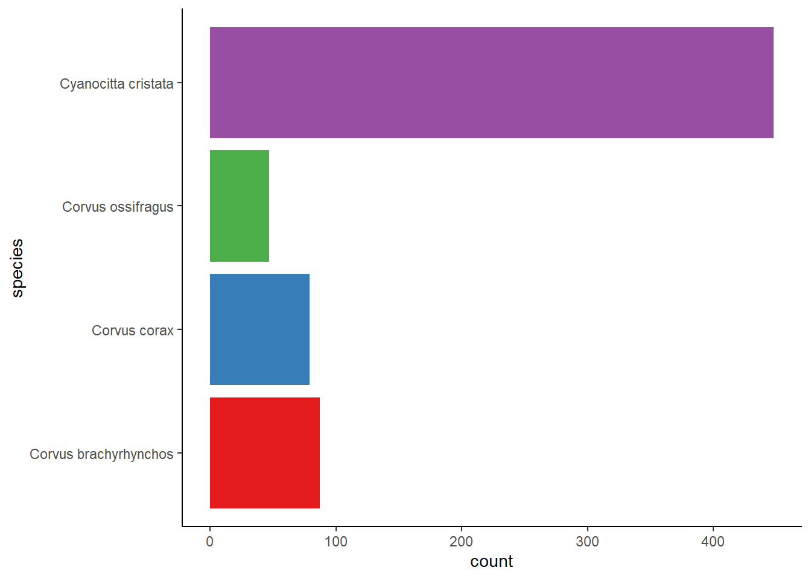
ggplot2::ggsave("MD_corvids_bar.png", plot = MD_corvids_bar, path = "deliverables")
#> Saving 7 x 5 in imageWhere were corvids observed in Maryland? Are there any hotspots for corvid observations?
MD_corvid_sightings <- ggplot() +
mapboxapi::layer_static_mapbox(
location = MD_corvids,
style_url = "mapbox://styles/mapbox/light-v10"
) +
ggplot2::geom_sf(
data = MD_corvids,
aes(color = species),
alpha = 0.7,
size = 0.3
) +
scale_color_brewer(
type = "qual",
palette = "Set1"
) +
labs(
title = "Crows and Blue Jays in Maryland",
caption = "Data courtesy of iNaturalist Research-Grade Observations via GBIF"
) +
ggplot2::theme_classic() +
ggplot2::theme(
legend.position = "bottom"
)
MD_corvid_sightings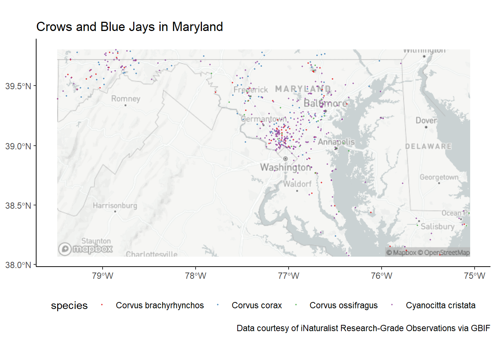
# FIXME: Center title position
ggplot2::ggsave("MD_corvid_sightings.png", plot = MD_corvid_sightings, path = "deliverables")
#> Saving 7 x 5 in image# Create new data.frame containing only insect sightings
MD_insects <-
GBIF_sm %>%
dplyr::group_by(family) %>%
dplyr::filter(class == "Insecta", !is.na(species))
# What families of insects are most commonly sighted?
MD_insects_by_family <- MD_insects %>%
dplyr::summarise(max = max(family), n = n()) %>%
dplyr::arrange(desc(n))
# Nymphalidae n = 3826
# Noctuidae n = 3788
# Libellulidae n = 2900
# What are the least commonly sighted?
# There 40 families of insects that have only been reported once
#
# Filter the sf data.frame down to the 40 insect families with single reportings (n = 1)
MD_rare_insects_inc <- MD_insects_by_family %>%
dplyr::filter(n == 1)
# Drop ggplot2::geometry before performing join
MD_rare_insects_df <- sf::st_drop_geometry(MD_rare_insects_inc)
# Perform left join where x = MD_rare_insects and y = MD_insects, resulting in a data.frame of 40 rows x 12 columns.
MD_rare_insects <-
left_join(MD_rare_insects_df, MD_insects)
#> Joining, by = "family"
# Transform back into sf object.
MD_rare_insects_sf <- sf::st_as_sf(MD_rare_insects, crs = 3857)
# Map rare insect sightings
MD_rare_insects_map <- ggplot() +
mapboxapi::layer_static_mapbox(
location = MD_rare_insects_sf,
style_url = "mapbox://styles/mapbox/light-v10"
) +
ggplot2::geom_sf(
data = MD_rare_insects_sf,
shape = 17,
size = 3,
alpha = 0.5,
color = "orange"
) +
scale_color_brewer(
type = "qual",
palette = "Set2"
) +
labs(
title = "Rare Sightings of Insects in Maryland",
caption = "Plotted are 40 unique insect species reported by users in Maryland on iNaturalist.\nNote: The rarity of these insect species have not been cross-referenced with ICUN Red List."
) +
ggplot2::theme_classic() +
ggplot2::theme(
legend.position = "none"
)
MD_rare_insects_map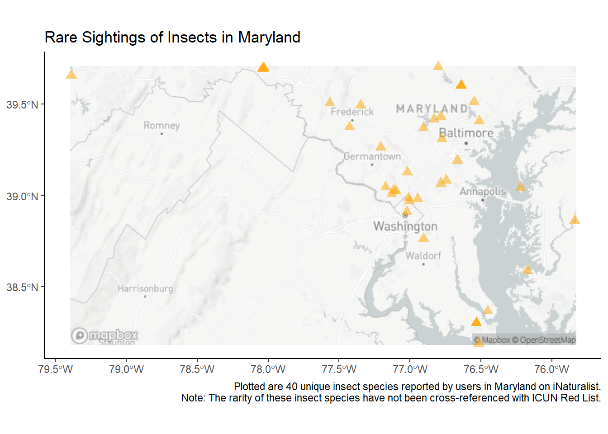
ggplot2::ggsave("MD_rare_insects_map.png", plot = MD_rare_insects_map, path = "deliverables")
#> Saving 7 x 5 in image